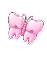
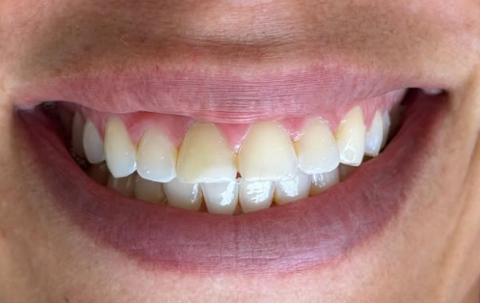
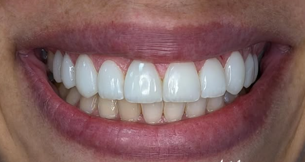
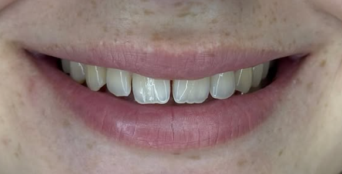
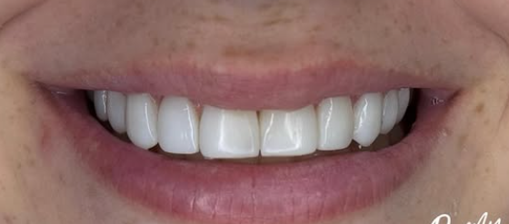

Não é só estética. É Autoestima
Veja como um sorriso pode transformar a forma como você se vê — e como o mundo te vê.


Veja como um sorriso pode transformar a forma como você se vê — e como o mundo te vê.




Sorriso mais branco com segurança.
Tratamento supervisionado que ilumina seus dentes de forma natural e preserva sua saúde bucal.
Procedimento seguro e planejado.
Indicada quando há dor ou falta de espaço, realizada com conforto e acompanhamento completo.
Recupere a função e a estética do seu sorriso.
Restauramos dentes comprometidos por cáries ou fraturas, devolvendo função, resistência e estética ao sorriso. Materiais de alta qualidade que reproduzem com precisão a cor e anatomia natural do dente.
Prevenção que mantém seu sorriso saudável.
Remoção de placa e tártaro para proteger seus dentes e gengivas, mantendo a saúde bucal em dia.
Confiança para sorrir novamente.
Soluções personalizadas que devolvem conforto, segurança e naturalidade ao seu sorriso e à sua mastigação.
Relatos de pacientes que tiveram suas vidas transformadas através do sorriso.
"Meu sorriso mudou completamente! Me sinto muito mais confiante para sorrir em fotos e me apresentar. O resultado ficou extremamente natural."
Ana S.
"Profissionalismo impecável do início ao fim. O resultado das facetas ficou tão natural que até minha família não percebeu — só viram o sorriso lindo."
Carlos M.
"Sempre tive medo de dentista, mas aqui me senti completamente à vontade. O atendimento é acolhedor e o resultado superou tudo que eu esperava."
Juliana R.
"Atendimento humanizado e muito cuidadoso. Saí da consulta com o sorriso brilhando e com orientações incríveis para manter a saúde bucal em casa."
Pedro L.
"Recuperei minha autoestima com as próteses. É tão natural que ninguém imagina. Sorrio com toda confiança e me sinto uma pessoa nova."
Mariana T.
"Achei que seria horrível, mas foi tranquilo do começo ao fim. O cuidado no pós-operatório foi excepcional. Me senti seguro em cada etapa."
Rafael B.
"Em poucas sessões meu sorriso ficou vários tons mais claro. Sem dor, sem desconforto. Recomendo demais para quem quer um resultado bonito e seguro!"
Fernanda C.
"Resultado perfeito. A Dra. Dafnny tem um olhar artístico incrível para o sorriso. Cada detalhe foi pensado com cuidado. Não poderia estar mais feliz."
Lucas A.
Sou dentista apaixonada por transformar sorrisos e vidas. Minha missão é unir ciência e estética para devolver o que há de mais precioso em você: a confiança de sorrir.
Com formação sólida e atualização constante nas melhores técnicas de odontologia estética, atendo cada paciente com atenção individualizada, criando tratamentos que respeitam sua harmonia facial e sua naturalidade.
Respondemos as dúvidas mais comuns dos nossos pacientes.
No momento trabalhamos com atendimento particular. Porém, oferecemos parcelamento facilitado e condições especiais para que você possa realizar seu tratamento com conforto e tranquilidade.
Aceitamos Pix, cartão de crédito (parcelado em até 12x) e débito. Para tratamentos maiores, elaboramos um plano financeiro personalizado para caber no seu bolso.
Em geral, o tratamento de facetas é concluído em 2 a 3 consultas: avaliação e planejamento, preparo dos dentes e instalação das facetas. O processo exato depende do número de dentes e do tipo de faceta escolhida.
Não. Quando realizado com supervisão profissional, o clareamento é seguro e não danifica o esmalte. A sensibilidade temporária pode ocorrer, mas é passageira e tratada com produtos específicos durante o processo.
Sim! Em casos de dor aguda, fratura dentária ou outros urgentes, entre em contato via WhatsApp e faremos o possível para atendê-lo no menor tempo possível.
Recomendamos a limpeza profissional a cada 6 meses. Pacientes com histórico de gengivite, aparelho ortodôntico ou implantes podem precisar de revisões a cada 3 ou 4 meses.
A lente de contato dental é um tipo ultrafino de faceta (0,3 mm) que geralmente não exige desgaste do dente. A faceta convencional é um pouco mais espessa e pode ser indicada para correções maiores de forma, cor ou posição.